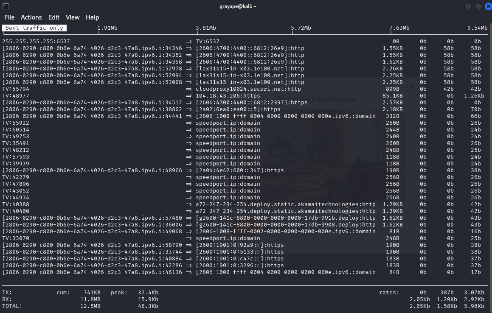

1.0_computer_networks.net
Computer networks rely on many devices, protocols, services, standards, etc. that enable us to communicate with one another.
OSI MODEL
The Open Systems Interconnection (OSI) Model was created to standardize and streamline communication between networked devices.
OSI Reference Model
- Layer 7 Application: Provides network services directly to user applications (HTTP, FTP, SMTP)
- Layer 6 Presentation: Handles data formatting, encryption/decryption (SSL, JPEG)
- Layer 5 Session: Manages communication sessions between devices (RPC, NetBIOS)
- Layer 4 Transport: Ensures reliable data transfer (TCP, UDP)
- Layer 3 Network: Handles logical addressing and routing (IP, ICMP)
- Layer 2 Data Link: Physical addressing and error detection (Ethernet, MAC)
- Layer 1 Physical: Transmits raw bit streams over physical media (Copper, Fiber)
Most devices operate on more than one layer, but to determine which layer a device is operating on, you must first identify the highest layer it is functioning on.
Network Devices
Layer 1 Devices:
- Analog modem: Developed to create connections between network segments via PSTN using POTS. Provides single connection (56Kbps max).
- Hub: Functions as a concentrator/repeater. Operates in half-duplex, creates single collision domain. Mostly obsolete.
Layer 2 Devices:
- Switch: Uses ASIC chips to learn MAC addresses and forward frames intelligently. Creates separate collision domains per port.
- Wireless Access Point (WAP): Bridges wireless and wired networks. Implements 802.11 standards (Wi-Fi 6, etc.).
Layer 3 Devices:
- Multilayer Switch (MLS): Combines Layer 2 switching with Layer 3 routing capabilities. High-performance but expensive.
- Router: Connects different networks using IP addressing. Maintains routing tables (static/dynamic routes).
Security Devices
Firewall
Operates at Layers 2-4 and 7 with two inspection methods:
- Stateless: Simple packet filtering (ACLs)
- Stateful: Tracks connection state (more secure)
Intrusion Detection System (IDS)
- Signature-Based: Matches known attack patterns
- Anomaly-Based: Detects deviations from baseline
- Policy-Based: Enforces admin-defined rules
Intrusion Prevention System (IPS)
Active system that can:
- Block malicious traffic
- Terminate connections
- Quarantine hosts Best placed between firewall and internal network.
VPN Concentrator
Specialized device for managing multiple VPN connections:
- Protocols: IPsec, SSL/TLS
- Functions: Authentication, encryption, access control
- Use cases: Remote access, site-to-site VPNs
Optimization Devices
- Load Balancer: Distributes traffic across servers (Round Robin, Least Connections)
- Proxy Server: Intermediary for client requests (Forward/Reverse proxies)
(PRACTICAL) Basic monitoring
-
iftop

-
nethog

-
iptraf-ng

Network Access Applications
- VPN: Secure remote access (IPsec, SSL)
- Remote Access: RDP, SSH, Telnet
- Web Services: HTTP/HTTPS, REST APIs
- Unified Voice: VoIP, SIP trunking
VPN Protocols
- IPsec: Secure encrypted tunnels (IKE, ESP)
- GRE: Generic Routing Encapsulation (no encryption)
- PPTP: Obsolete (MS-CHAP vulnerabilities)
- TLS/SSL: Common in web-based VPNs
Network Access Services
- NIC: Network Interface Card (Physical/MAC address)
- RADIUS: Centralized authentication (UDP 1812)
- TACACS+: Cisco alternative (TCP 49, more secure)
DHCP
Dynamic Host Configuration Protocol (DHCP) is a network management protocol used to automatically assign IP addresses and other network configuration parameters to client devices. It simplifies network management by reducing the need for manual IP configuration.
- Static IP: Manually configured IP address that does not change over time. Useful for servers, printers, and other critical devices.
- Dynamic IP: Automatically assigned by the DHCP server from a predefined pool. The address may change when the lease expires or the device reconnects.
- DHCP Process (DORA):
- Discover: Client sends broadcast request to locate a DHCP server.
- Offer: Server responds with an available IP address and configuration options.
- Request: Client requests the offered IP from one of the servers.
- Acknowledgment: Server confirms the lease and completes the configuration.
- Ports: DHCP communication uses UDP port 67 (server) and UDP port 68 (client).
- Leases: IP addresses are assigned for a limited period (lease time). Clients must renew leases before expiration to keep their IPs.
- Options: Additional parameters provided by the DHCP server, such as default gateway, DNS servers, domain name, NTP servers, and more.
- Preferred IP configuration: Clients can request a specific IP address, and the server may honor the request if available.
- DHCP Relay (IP Helper): Allows DHCP requests to be forwarded across subnets to a central DHCP server. Common in large networks to avoid deploying a DHCP server per subnet.
DNS
The Domain Name System (DNS) translates domain names into IP addresses. It is a critical component of network communication and internet functionality.
- Servers: Include root, TLD, authoritative, and caching resolvers. Resolve queries from users to locate websites or services.
- Records:
- A/AAAA: IPv4/IPv6 address records.
- CNAME: Alias for another domain.
- MX: Mail exchange server.
- NS: Delegates a subdomain to a DNS server.
- PTR: Reverse DNS mapping.
- TXT: Text records (e.g., SPF, DKIM).
- Dynamic DNS: Automatically updates DNS records in real-time when devices join or leave the network, useful in environments with frequently changing IPs.
NAT (Network Address Translation)
- Static NAT: 1:1 mapping (public:private)
- Dynamic NAT: Pool of public addresses
- PAT (Port NAT): Many private to single public
- Address Types: Public/Private, RFC 1918
(PRACTICAL) Service Enumeration
Tools used for querying, discovering, and enumerating information about services, particularly DNS and web services:
-
dig: A powerful DNS lookup tool for querying specific DNS records and analyzing DNS responses.

-
dnsrecon: Python-based tool for performing DNS enumeration, including brute force, zone transfers, and record collection.

-
curl: Transfers data from or to a server using supported protocols (HTTP, FTP, etc.), ideal for testing endpoints.

-
wget: Retrieves content from web servers, often used for downloading files or mirroring websites.

WAN Technologies
PSTN
- Dial-up: 56Kbps max (POTS)
- ISDN: Digital (128Kbps, BRI/PRI)
- xDSL: Digital Subscriber Line variants:
- ADSL: Asymmetric (faster download)
- VDSL: Very-high-bitrate (fiber hybrid)
Broadband
- DOCSIS: Cable modem standard (3.1 = 10Gbps)
- Fiber:
- FTTH: Fiber to Home
- FTTC: Fiber to Curb
- FTTN: Fiber to Node
Wireless
- Cellular: 4G LTE, 5G (mmWave)
- WiMAX: IEEE 802.16 (alternative to DSL)
- Satellite: High latency (Geostationary/LEO)
Enterprise WAN
- Metro Ethernet: Ethernet over MAN
- Leased Lines: T1 (1.544Mbps), E1 (2.048Mbps)
- MPLS: Label switching for QoS
- Frame Relay: Legacy packet-switched
- ATM: Fixed 53-byte cells (obsolete)
Network Cabling
Twisted Pair
- UTP: Unshielded (Cat5/6)
- STP: Shielded (industrial environments)
- Plenum: Fire-retardant jacket
- Cable Types:
- Straight-through: Host to switch
- Crossover: Like devices (e.g., switch to switch)
- Rollover: Console access (used with serial connections)
Connectors
- RJ11: 6P2C, used for telephone connections
- RJ45: 8P8C, used for Ethernet networking
- 66/110 Block: Punch-down blocks used in structured cabling
- Serial (DB9/DB25): Legacy connectors for console and serial data
Categories
- Cat5: 100 MHz, up to 100 Mbps (obsolete)
- Cat5e: 100 MHz, up to 1 Gbps
- Cat6: 250 MHz, up to 10 Gbps (up to 55m)
- Cat6a: 500 MHz, up to 10 Gbps (up to 100m)
Coaxial Cabling
- Shielded Core: Central copper conductor with insulating layer and metallic shield
- Use Cases: Cable TV, broadband internet, CCTV
Cable Types
- RG-6: Modern standard for TV/Internet; thicker, less signal loss
- RG-59: Older CCTV applications; thinner, more signal loss
- RG-11: Best for long-distance runs; thick and less flexible
Connectors
- BNC: Quick-connect used in CCTV and legacy Ethernet
- F-type: Screw-type connector for TV and modems
- N-type: Durable connector for outdoor and industrial RF use
Fiber Optic Cabling
- Glass or Plastic Core: Transmits light signals instead of electricity
- Use Cases: High-speed LANs, WANs, backbone cabling
Cable Types
- Single-mode (SMF): 9µm core, laser light, long-range (up to 100km)
- Multi-mode (MMF): 50/62.5µm core, LED light, short-range (up to 2km)
Connectors
- LC: Compact connector, common in data centers
- SC: Push-pull connector, widely used in telecom
- ST: Twist-lock connector, used in legacy fiber systems
- MTP/MPO: Multi-fiber connectors for 40/100+ Gbps links
Media Converters
Devices that allow different types of media to interconnect (e.g., copper to fiber). Useful in extending network distances or integrating older equipment.
- Copper-to-Fiber: Converts electrical signals to optical
- Single-mode to Multi-mode: Adapts fiber types
- Bidirectional (BiDi): Uses a single fiber strand for TX/RX
- Managed vs Unmanaged: Managed converters offer SNMP/monitoring
Cabling Tools
Essential tools for installing, testing, and maintaining network cables.
- Crimpers: Used to attach RJ45/RJ11 connectors to cable ends
- Wire strippers: Remove insulation from cables without damaging conductors
- Punchdown tool: Terminates wires into punchdown blocks (66/110)
- Cable tester: Verifies correct pinouts, continuity, and detects shorts
- TDR (Time Domain Reflectometer): Tests copper cable length, detects breaks or shorts
- OTDR (Optical Time Domain Reflectometer): Tests fiber length, loss, and faults
Network Topologies
Describes how network devices are physically or logically arranged.
- Peer-to-peer: Devices communicate directly without central server
- Client/server: Centralized services with dedicated servers
- Hybrid: Mix of two or more topologies
- Bus: Single backbone with terminators at ends (legacy)
- Ring: Devices connected in circular fashion; one device failure can disrupt network
- Star: All devices connect to a central hub or switch
- Mesh: Devices interconnect with many redundant paths (full/partial)
- Point-to-point: Direct connection between two devices
- Point-to-multipoint: Central node communicates with multiple endpoints
- MPLS: Logical overlay that uses labels instead of IP routes for fast, efficient routing
Network Infrastructure Implementations
Defines the scope and scale of network coverage.
- PAN (Personal Area Network): Short-range (e.g., Bluetooth, USB tethering)
- LAN (Local Area Network): Covers a single building or campus
- MAN (Metropolitan Area Network): Spans a city or large campus
- WAN (Wide Area Network): Covers large geographic areas (e.g., the Internet)
- SCADA (Supervisory Control and Data Acquisition): Industrial control systems for monitoring and controlling infrastructure (e.g., power plants, water treatment)
- Medianet: Cisco term for networks optimized for media (e.g., video conferencing, streaming)
IP Addressing
IPv4 Properties
- IPv4 uses 32-bit addresses written in dotted decimal notation (e.g., 192.168.1.1).
- It supports around 4.3 billion unique addresses.
- Each address has a network and host portion.
- Paired with a subnet mask to define network boundaries.
Classes of IPv4 Addresses
- Class A: 0.0.0.0 – 127.255.255.255
- Class B: 128.0.0.0 – 191.255.255.255
- Class C: 192.0.0.0 – 223.255.255.255
- Class D: 224.0.0.0 – 239.255.255.255 (Multicast)
- Class E: 240.0.0.0 – 255.255.255.255 (Experimental)
Classless IPv4 Addresses
- CIDR (Classless Inter-Domain Routing) replaces class-based addressing.
- Allows flexible subnetting with prefix notation (e.g., /24).
- Enables efficient IP allocation and route aggregation.
Subnetting IPv4 Addresses
- Divides networks into smaller subnetworks.
- Reduces broadcast domains, improves performance and security.
- Key concepts: subnet mask, network ID, broadcast address, host range.
IPv6 Address Structure
- IPv6 uses 128-bit hexadecimal addresses (e.g., 2001:0db8::1).
- Written in eight 16-bit blocks, compressed with “::” where applicable.
- Vast address space to accommodate modern internet growth.
IPv6 Network Transmissions
- IPv6 supports:
- Unicast (one-to-one)
- Multicast (one-to-many)
- Anycast (one-to-nearest)
- IPv6 does not use broadcast.
Special IP Networking Concepts
The Media Access Control Address
- MAC address is a unique hardware address assigned to NICs.
- 48-bit address in hexadecimal (e.g., 00:1A:2B:3C:4D:5E).
- Operates at Layer 2 of the OSI model.
Collision Domains vs. Broadcast Domains
- Collision domain: where data packets can collide (typically within hubs).
- Broadcast domain: where a broadcast packet is propagated (limited by routers).
- Switches separate collision domains; routers separate broadcast domains.
Types of Network Transmissions
- Unicast: one sender to one receiver.
- Broadcast: one sender to all devices (IPv4 only).
- Multicast: one sender to specific group.
- Anycast: one sender to the closest receiver (IPv6).
Routing
Static Routing
- Routes are manually configured by an admin.
- Simple but not scalable; no automatic path updates.
Dynamic Routing
- Routers learn routes from each other automatically.
- Uses protocols like OSPF, EIGRP, RIP, and BGP.
Default Route
- A catch-all route when no specific match is found.
- Usually points to the internet gateway.
- Represented as
0.0.0.0/0or::/0.
Routing Table
- Stores all known routes to destination networks.
- Includes static, dynamic, and default routes.
Loopback Interface
- A virtual interface used for diagnostics and stability.
- IPv4: 127.0.0.1, IPv6: ::1
Routing Loop
- A situation where packets endlessly circulate due to misconfiguration.
- Prevented using TTL, split horizon, or route poisoning.
Routing Metrics
- Values used to determine the best route.
- Includes hop count, bandwidth, delay, reliability, and cost.
Routing Aggregation
- Combines multiple routes into one summary route.
- Reduces routing table size and simplifies configuration.
High Availability
- Ensures continuous network operation through redundancy.
- Technologies: VRRP, HSRP, GLBP, failover routing, load balancing.
Routing Protocols
IGP (Interior Gateway Protocol)
- IGPs are used for routing within a single autonomous system (AS).
- Designed for internal network communication and fast convergence.
- Common IGPs:
- RIP (Routing Information Protocol) – Distance-vector, simple but limited.
- OSPF (Open Shortest Path First) – Link-state, scalable, widely used.
- EIGRP (Enhanced Interior Gateway Routing Protocol) – Cisco proprietary, advanced distance-vector.
EGP (Exterior Gateway Protocol)
- EGPs are used for routing between autonomous systems, usually across the internet.
- The primary EGP is:
- BGP (Border Gateway Protocol) – Path-vector protocol used by ISPs and enterprises to exchange routing information on the internet.
- EGPs focus on policy-based routing and scalability, rather than speed of convergence.
(PRACTICAL) Network and connectivity analysis
ping
Ping is used to test connectivity to another host on a network. It sends ICMP Echo Request messages and reports whether the host responds, along with the round-trip time. It helps detect basic network reachability issues.
traceroute
Traceroute shows the path that packets take to reach a destination. It lists each router (hop) along the path and measures latency to each one. It is useful for diagnosing where delays or drops occur in the route.

ip
The ip command is used to manage network interfaces, addresses, routing tables, and ARP entries. It replaces older tools like ifconfig, route, and arp, providing more functionality and flexibility.

nmap
Nmap is a powerful network scanner used to discover hosts, open ports, and services running on a network. It is widely used in security auditing and penetration testing for network reconnaissance and vulnerability detection.

netcat
Netcat is a flexible tool used for network diagnostics and debugging. It can open TCP or UDP connections, listen on ports, transfer files, and test services. It is also used for banner grabbing and setting up reverse shells in security contexts.